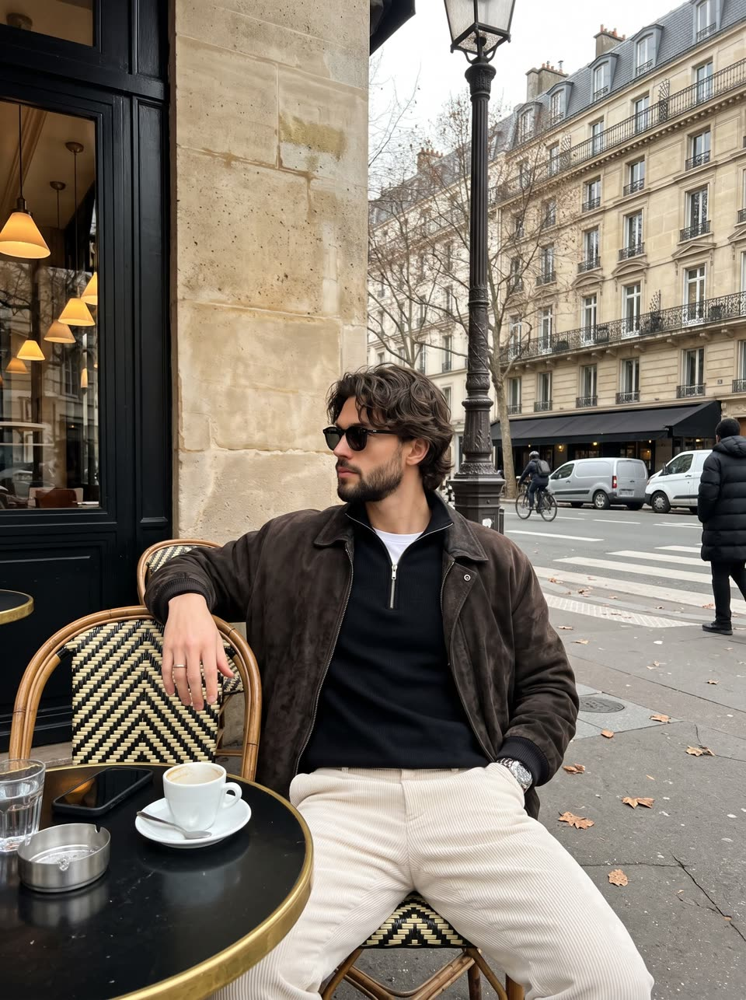

Nano Banana 2.1 candid Paris café portrait: hex-coded wardrobe, measured haircut, every object on the bistro table, ISO 400 film-emulation finish

A Gemini Nano Banana 2.1 street-style still written like a forensic photo description: a man at a sidewalk café, torso at 45 degrees and head in left profile, with every garment colour pinned by hex code (#2A211D suede jacket, #161617 quarter-zip, #E3DFD7 corduroys), the haircut measured by where it falls, each object on the brass-rimmed bistro table listed, and the background built in planes (lamp post, crosswalk, plane trees, Haussmann facade). Ends with camera settings (ISO 400), medium depth of field, desaturated earth tones and subtle 35mm grain emulation. Good for candid-realism stills and as a Seedance start frame.
Prompt
A young man sits at an outdoor Parisian sidewalk cafe in a candid, medium-scale shot captured straight on at seated eye level using the rule of thirds. He is dressed in an oversized distressed dark espresso brown (#2A211D) suede jacket layered over a jet black (#161617) quarter-zip sweater, a white tee, and wide-leg cream off-white (#E3DFD7) corduroy trousers. His dark brown wavy hair is styled in a medium-length layered scissor cut where the back reaches his mid-neck, the sides brush his upper ears, and a tousled fringe falls to his brow, showcasing a natural imperfect matte texture with loose curls, slight frizz at the crown, visible flyaways, and moderate volume without a defined part. His torso is angled at a 45-degree turn while his head is turned in left profile, projecting a confident, candid demeanor with neutral eyebrows, relaxed closed lips, and eyes obscured by dark sunglasses looking away to the left. Leaning slightly back and to the left with relaxed, slightly sloped shoulders, he rests his right arm along the backrest of a vintage bentwood rattan bistro chair featuring a black and cream woven chevron seat, his relaxed right hand draped casually with fingers loosely curved downward and a thin silver band on the ring finger, while his left hand is tucked inside his trouser pocket with a silver wristwatch visible at the wrist. In the bottom-left foreground sits a worn, round black bistro table rimmed in brass, its glossy top holding a white porcelain coffee cup, saucer, and spoon, a ribbed water glass, a stainless steel ashtray, and a black smartphone. Behind him on the left, the cafe facade features warm limestone beige (#BDB3A4) cut ashlar stone blocks with mortar lines, natural weathering, and an aged urban patina alongside semi-gloss jet black painted wood window framing whose glass panes reflect warm interior pendant lamps. In the midground and softly blurred deep background, a weathered black fluted cast-iron street lamp post rises above a cool slate gray (#7D8082) stone pavement and asphalt street marked with white crosswalk stripes and scattered dry brown leaves, where a cyclist, a bicycle wheel, parked silver and white vans, and a pedestrian in a black puffer coat pass beneath dormant leafless London plane trees (Platanus x acerifolia) and an aged Haussmannian apartment building with a limestone facade, wrought-iron balconies, a dark ground-floor awning, and a mansard roof. Diffused, moderate-intensity overcast daylight from above and the right mixes with warm interior cafe lights and ambient fill to create a medium-contrast, sophisticated Parisian autumn atmosphere with short, soft-edged gray shadows under the table, inside the jacket folds, and beneath his jawline, paired with preserved specular highlights across the tabletop, brass rim, glass, and corduroy trousers. Captured as a realistic digital photograph influenced by Parisian street style and 90s vintage menswear editorials using a 35mm lens at f/2.8, 1/250s shutter speed, and ISO 400, the image features a medium depth of field, slightly soft sharpness, a desaturated earth-tone color grade with lifted shadows, a warm highlight tint, and subtle 35mm film grain emulation, framed in a 3:4 vertical portrait aspect ratio.
Our Seedance 2.5 adaptation
[ADAPTED for Seedance 2.5 by Grok Bot; not the creator's prompt. Follows the official BytePlus Seedance 2.5 prompt guide and its official sd25-pe prompt-optimizer skill: parameters only on the API line (not in the prompt body), subject + action + scene, then visuals, camera (move, subject, start, direction, arrival) and sound; only the source's own exclusions are kept.] API: duration 5, ratio 3:4 (taken from the first frame), resolution 1080p (4k for a final), generate_audio true; first_frame = the REA-095 still. 【Subject】The man at the Paris sidewalk café as in the first frame: dark espresso suede jacket, black quarter-zip, cream corduroys, dark sunglasses, arm along the rattan chair back. 【Action】He keeps looking left down the street, then lifts the white porcelain cup from the bistro table, sips, and sets it back on the saucer; a cyclist passes behind him and a pedestrian in a black puffer coat crosses. 【Camera】Static at seated eye level, rule-of-thirds framing kept; the background stays softly blurred. 【Visuals】Overcast daylight with warm interior café light on the window glass, desaturated earth tones, lifted shadows, subtle 35mm film texture. 【Sound】Street ambience, cup on saucer, bicycle bell in the distance, café chatter in French with no clear words.
Tags: Nano Banana 2.1, Gemini app, candid street portrait, hex colour codes, object inventory, Paris café, overcast daylight, 35mm grain emulation, 3:4, image